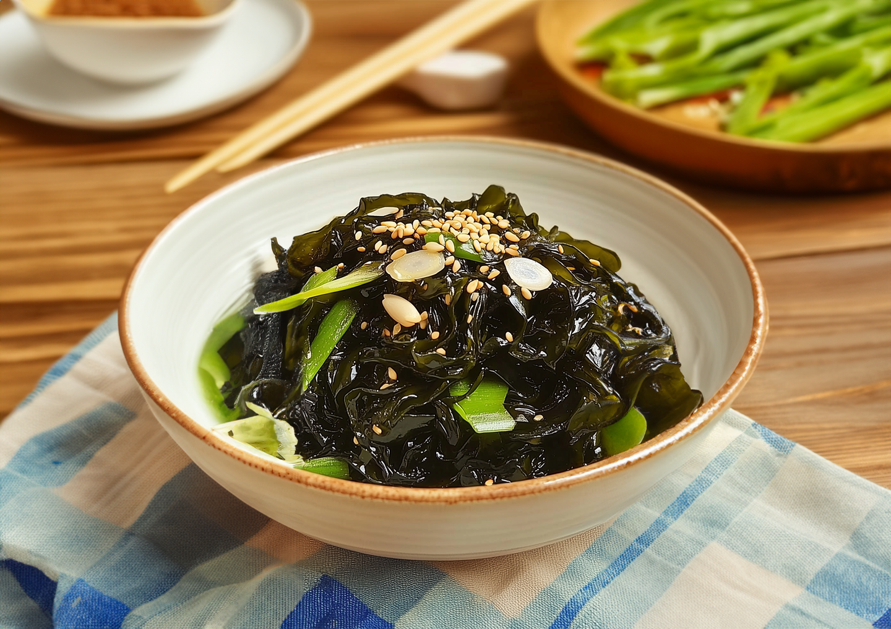

미역나물
생미역
참기름
소금
국간장
깨
1. 여러 채소를 활용하여 육수를 우린다.
생미역(물미역)을 준비한다. 큰 양재기에 미역을 넣고 빠득빠득 빨듯이 깨끗하게 씻어준다.
굵은 미역줄기 부분은 먹기 좋게 손으로 찢어서 손질한다. 미역의 미끌함이 없어질 때까지 흐르는 물에 씻어 준 다음 채반에 건져 물기를 뺀다.
물기가 제거된 미역을 먹기 좋은 크기로 썬다음 참기름, 소금, 국간장, 깨를 넣어 버무려주면 완성이다.
바다향과 참기름향의 합작.